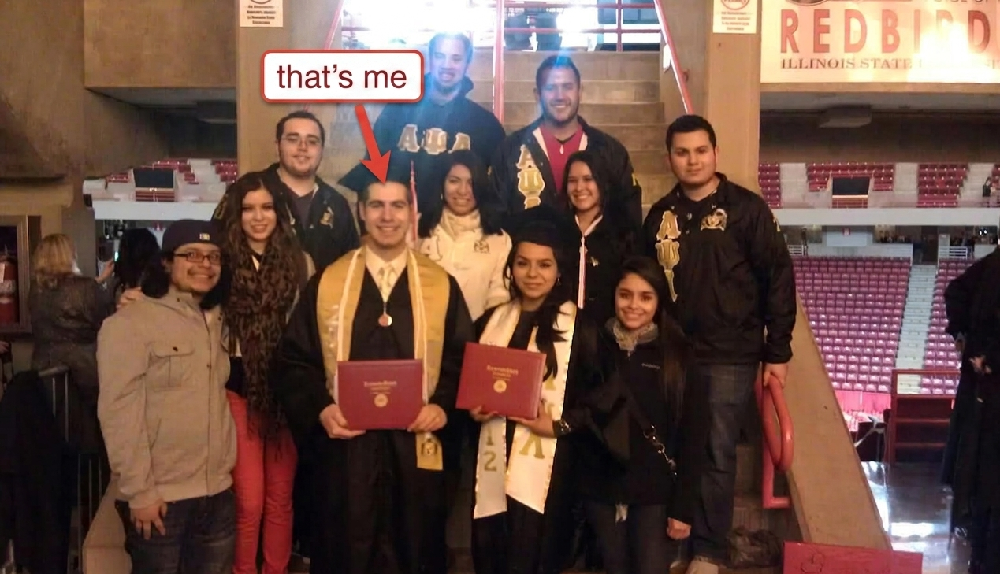

Attention homeschool parents frustrated with Spanish-learning apps and programs:
How I Taught my Daughter Spanish Using a Little-Known ‘Counter-Intuitive’ Method... and How it can Teach your Homeschooled Children to Have Spanish Conversations in 5 Months or Less!
I’m a Spanish teacher with 11 years experience and I want to share the truth about ineffective Spanish teaching methods and how to make real progress in Spanish in the next few months
Learn the Secret to Speaking Spanish
Tired of Ineffective Spanish-Learning Methods?
Dear friend,
Teaching your kid Spanish is hard.
You're probably trying to figure out what situations to practice in, how to make sure they retain what they learned, how to keep them motivated, and more.
It can feel overwhelming, especially when online advice bombards you with 20 different things you "should" do.
You end up downloading 3 vocab apps, having your kid watch Spanish TV, grinding through workbooks, and so on.
All while potentially feeling fear or guilt that your kid might miss out on the benefits of knowing Spanish…
Like connecting with family and community members, keeping your culture alive, travel and life opportunities, and more.
If this sounds like you…
I want to tell you about an exciting process I built to teach anyone to have real Spanish conversations in 5 months or less.
I know it works because…
I Taught my Daughter Spanish Despite Having Almost no Bilingual Programs in Our Community
My name is Michael Rosales.
Four years ago, my wife and I had a daughter, and because there were few bilingual programs in our area, we decided I would teach her myself using what I learned while teaching Spanish in schools.
I discovered how to solve common Spanish-teaching issues parents face, such as:
How to keep her motivated to learn when she doesn’t have many friends who speak Spanish
How much to focus on vocab and grammar VS real speaking
How to get her practicing the language in real world situations
… And more.
She's only four years old, but with what she learned, she can read Spanish books and can have basic conversations with family members.
When I saw that my methods worked, I decided to try seeing if I could help other families too.
See, I've been teaching Spanish for over 11 years.
I even graduated from Illinois State University with a degree in Spanish Teacher Education (it is often ranked as the #10 Spanish Teacher Education program in the U.S.).

I adapted some curriculums for my online classese, and in a few months…
I Created Rosales Cultural Lessons, Where I've Used My Methods to Help Dozens of Students Acquire Lifelong Spanish Skill
Claim Your FREE First Lesson!
Claim Your No-Obligation Free Lesson and Discover How to Finally Make Huge Progress in Spanish the Fun and Easy Way
The Amazing, Easy, Fun but "Forgotten" Spanish-Teaching Method That Can Have You Speaking Real Spanish Conversations in 5 Months or Less!
Unlike language apps or curriculums that repeat rigid vocab and grammar– I use a unique approach that has my students create stories and scenarios on the spot.
You see, speaking is a complex, improvisational thing. No two conversations are the same.
My students learn fluid conversation skills they can use when talking to a stranger in Spanish, to a family member, or to anyone.
This science-based teaching method, called TPRS, takes advantage of a concept called “embodied learning”.
And it’s just one part of the teaching system I've been perfecting over the last decade.
But before I tell you more about that…
Who Are These "Conversation-Focused" Spanish Lessons For?
Are you a parent who wants your child to continue your Spanish-speaking heritage?
Do you want your child to be able to use Spanish in their culturally diverse neighborhood?
Do you want your child to take advantage of the various career and life opportunities that come from learning Spanish?
Are you interested in learning Spanish for your own reasons, such as travel, cultural enrichment, or just out of pure curiosity?
If you answered “yes” to any of the above, this may be one of the most exciting opportunities you find this year.
Claim Your FREE First Lesson!
Claim Your No-Obligation Free Lesson and Discover How to Finally Make Huge Progress in Spanish the Fun and Easy Way
Throw Away Your Spanish Apps and Workbooks!
I learned effective teaching methods during my 11 years of teaching Spanish to all kinds of people, including:
High school students
Middle and Grade school students
Adults with independent reasons for learning Spanish
Family members and friends
And others!
Claim Your FREE First Lesson!
Claim Your No-Obligation Free Lesson and Discover How to Finally Make Huge Progress in Spanish the Fun and Easy Way
Small Classes Designed to Maximize Your Student's Learning
I keep my Rosales Cultural Lesson classes at or below 10 students to make sure everyone is participating and learning.
Lessons are an hour a day, 3-4 days a week.
We keep a good balance between fun, fluid interactions that build real Spanish social skill and learning grammar and rules.
The goal is conversational fluidity, which can take years to build, but...
... In just a few months of my classes, students can easily talk about their hobbies and interests in Spanish.
After more than a decade of doing this, some of the results have been amazing. In fact…
Some of My Students Wrote me Years Later to Say My Teaching Left a Lasting Impact on Their Spanish Speaking Ability
One of them told me they used Spanish to help customers in the hospital they got a job at.
One of my high school students tutored her peers in a college Spanish class (meaning she had greater expertise of the language) using what I taught her in high school.
I even had a student who, with what I taught her, could easily communicate with her college roommate, who was from Spain!
It made me realize that the benefits of Spanish go even beyond connecting with family and close community. For example…
Claim Your FREE First Lesson!
Claim Your No-Obligation Free Lesson and Discover How to Finally Make Huge Progress in Spanish the Fun and Easy Way
Picture The Exciting Travel Opportunites You Get From Knowing Spanish!
Ordering the best off-menu tacos at a street stall in Mexico City while joking around with the local vendor.
Skipping the tourist traps after a local gave you directions to their favorite underground tapas bar in Madrid.
Sitting around a bonfire on a hidden beach in Costa Rica and immersing yourself in the stories and conversation.
And that's only Spanish speaking countries– there are over 574 million Spanish speakers in the world and people speak it almost EVERYWHERE!
But the benefits don’t stop there…
Enjoy Enhanced Memory, Cognitive and Academic Performance by Learning Spanish!
Studies show learning a second language improves cognitive performance, memory, concentration, communication skills, creativity/empathy... and more.
It was even discovered that students who study a foreign language achieve higher test scores in Math and English, and superior ACT and SAT scores.
Open Up Incredible Professional and Career Opportunities by Learning Spanish
85% of employers rely on the language skills of Spanish-speaking employees
42% of US employers face a shortage of workers proficient in Spanish
Bilingual employees earn 5-20% more than their monolingual counterparts
All of that means more (and better) job opportunities, more money, and more options… just by knowing Spanish.
Do these benefits excite you? Then...
Claim Your FREE First Lesson!
Claim Your No-Obligation Free Lesson and Discover How to Finally Make Huge Progress in Spanish the Fun and Easy Way
Give me 3-4 Days a Week, One Hour a Day, and I'll Make You a "Spanish Natural" in 5 Months
The truth is, learning Spanish is a HUGE benefit to anyone's life, and learning it young gives an incredible head start.
And, because of the results my students have gotten, I'm confident that my lessons will be one of the best ways for you or your kid to acquire this skill.
Claim Your FREE First Lesson!
Claim Your No-Obligation Free Lesson and Discover How to Finally Make Huge Progress in Spanish the Fun and Easy Way
See What Our Students Are Saying
Kick Away Guilt and Uncertainty That Your Child Will Never Learn Spanish in 3 Easy Steps:
1.
Claim your free, no-obligation online Spanish lesson with me
2.
We’ll discuss any questions you have, and you’ll learn and experience the teaching methods I use to accelerate my students’ Spanish growth.
3.
Have your student (or you) attend my online classes, watch their Spanish skill grow, and celebrate their new valuable lifelong skill!
Claim Your FREE First Lesson!
Claim Your No-Obligation Free Lesson and Discover How to Finally Make Huge Progress in Spanish the Fun and Easy Way
Give Your Kids Confidence in Speaking Spanish and Amazing Life Opportunities
Think about what it would really mean for your kid to finally learn Spanish.
The impact on their life in the short and long term.
The conversations and connections with their family.
The adventures and people they'd meet.
Plus improved memory, improved cognition, better academic performance, and more.
How much would you value giving your kid those benefits for life?
If you’re tired of ineffective Spanish apps or workbooks, the dozens of tips and tricks that don’t work longterm, and worrying that your kids will miss out on Spanish forever, I want to make you a special offer.